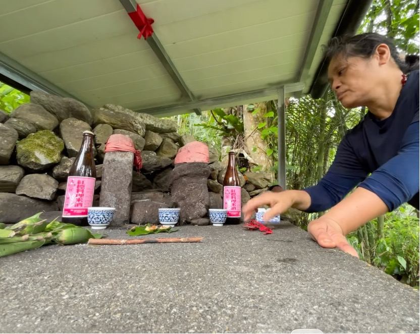
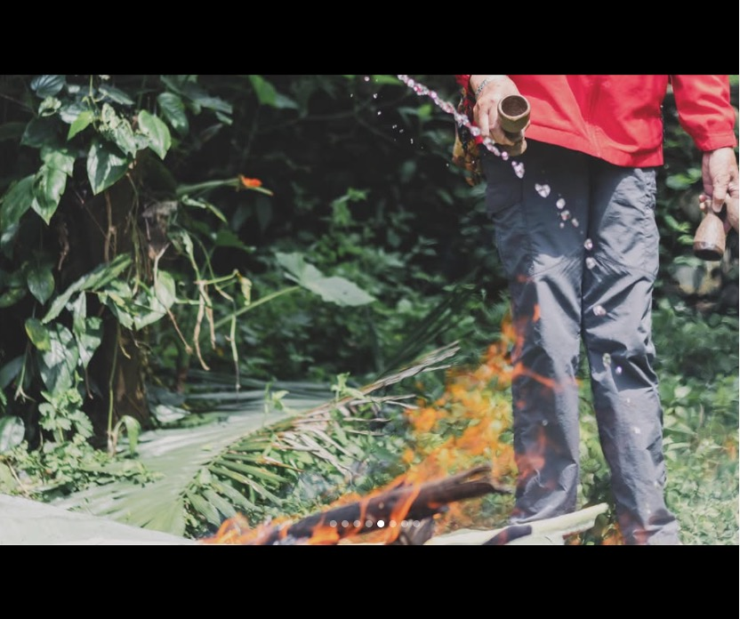

四、五月的花蓮光復，上午總是悶熱得一點風都沒有。而午後，大雨卻又來得令人措手不及。那我們為什麼在這不太適合的時間燒陶呢？主要是跟著學習的時間安排，還有外縣市的朋友要參加，是在年初就安排好了。那當然還是有許多部落時間及意料之外的問題。
我們把燃料都準備好，漂流木和稻殼大約都各準備10包。afo ina 從家裡帶來了數十個耐火磚鋪底，依序倒入一包稻殼，好好地安放作品做後再鋪上厚厚的稻殼。我們在這個階段 mifetik 倒酒告知祖靈「今天開始我們會在這裡點火燒陶，說明有誰參與，什麼原因來到這裡並且呼喚過去製陶祖先的名字。希望可以借助祂們的力量來完成燒製」過程中的小插曲，kati 阿公協助我們搭完窯的房子後，坐下來休息聊聊天。nakow ina邀請也是 sikawaay的阿公，為這次的燒製，跟祖靈說說話。便展開了一串與祖靈聊天的對話。
其實在一早，afo ina帶我們準備燒製的時候，準備了香蕉葉、酒水、荖葉、檳榔以及祭杯 dewas。在鋪好窯床後便依序將祭品放置好，並將祭杯倒滿酒，這次的祭杯我們是使用太巴塱部落的黏土當胚體，並且將馬太鞍堰塞湖淤泥做局部上釉，以1230度電窯氧化燒製而成。

疊好窯床時，就將祭品安方在適合的位置，祭告完隨後點火，正當我們協助將火點燃的同時，ina 在祭品前將酒拿起來手中唸了幾句話後，便將酒水倒入火堆。（以迅雷不及掩耳的速度，長輩們很熟悉的儀式流程，一個不注意很容易會錯過。）

隨後，我們便將到海邊採集的漂流木由細樹枝開始引燃堆疊，用漂流木將稻殼包圍隨之白煙四起。因早上的炎熱，加上點火的高溫，afo ina 雙頰逐漸通紅，怕ina中暑我們趕緊去拿舒跑來讓她補充電解質並且坐在火堆旁的上石階上休息，稍微緩和下來她便說：「我剛剛頭好暈，有點呼吸不到空氣。」因為我們這次燒製的地點是在馬太鞍部落（fata'an）的 kakita'an 祖靈屋旁，nakow ina（fata'an 部落的巫師之一）見狀不對，變拿起米酒，對 afo ina 唸一些咒語，並將手按壓在她頭上同時從口中噴濺出米酒。nakow ina 說：「不要小看我們這片山坡地，很多祖靈住在山上，祂們會下來看我們在做什麼。」
「妳是這次的主人嗎？」（指的是籌劃這場戶外燒陶）nakow ina 接著對 sera' 說：「妳準備米酒我們上去跟土地公報備一下。」當下對土地公這個名稱感到疑惑，ina 帶我到山坡向清晨已經到過酒的祭桌上再倒米酒祭拜。後來，nakow ina 說明這個祭桌上有幾位神靈，分別是掌管清晨的星辰與露水的祖靈、植物發芽的神，以及 kalakicai 掌管這個區域的祖靈，ina 稱之為土地公。
那天巡田水的 kati ayaka 阿公路過紅瓦屋的時候，正下著大雨，而我們看上去就像一群荒亂的小雞。上午將火引燃，隨後我們便與 afo ina 的先生將準備的帆布搭起來（戶外場域絕對是阿美族男子的天下，在家就是太太說的算），但實在是太小了，只夠遮蔽火堆上方的區域，顧火的我們只能淋雨。因為要燒製三天兩夜的時間，我們還是要盡早將這幾天的屋頂蓋好。
終於在全身被雨淋濕的狀況下完成，我們便圍著火堆取暖。這時 nakow ina 拿著米酒和杯子遞給 kati 阿公，請他跟附近的神靈說說話；本來前一秒還在開玩笑說道：「看那顆柚子樹，晚上可以拿那個葉子來打鬼！哈哈哈」，突然就轉換族語動作就像是有人在阿公耳邊說悄悄話。突然說了：afo ina hey! hey! Tafalong 的 paha ato nagday，這幾個關鍵字。nakow ina 在一旁重複著，這幾位就是太巴塱部落過去製陶的祖先們。
「不能在這裡烤肉喔！」
「如果有人抽煙，不可以隨手把煙蒂丟在火堆裡」
「這幾天都不能吃水裡面的食物」
「要吃綠豆，可以加豬肉！」（編按：祖先開始點菜了嗎？）
「土地公有拜了嗎？」
說著說著，阿公指著旁邊一顆柚子樹：「sera' 在那邊倒酒！」我們便趕緊將樹下的雜草整理一下，找來一顆較平整的石頭，把酒杯放上去倒滿酒 nakow ina 在旁一樣用族語告知周圍的耳朵。阿公接着說「明天早上太陽出來的時候放三顆檳榔在前面，一樣要倒酒喔！」
很可惜族語詞彙單薄的我們，遇見這樣難得且稍縱即逝的機會，卻只聽得懂一些單詞沒能清楚理解當下的語境，及這些禁忌背後的原因。但這也成為我們想更深入學習的動力！慢慢感受語言背後蘊藏的文化深意。